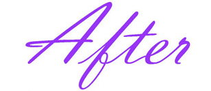
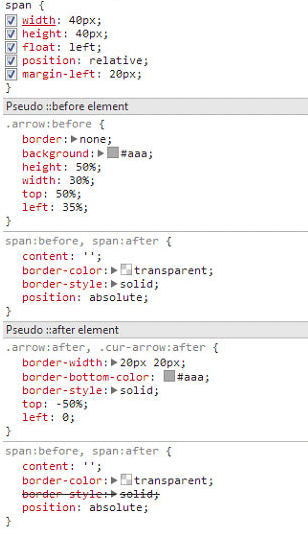
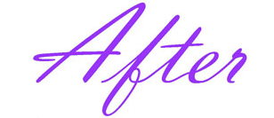
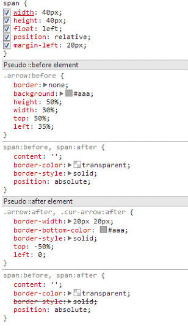
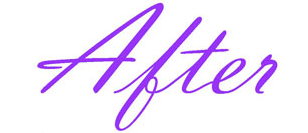
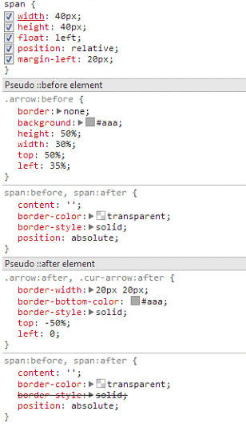

Pseudo Classes
伪元素就是一个跟屁虫
我们今天要说的是伪元素before、after的妙用，请看下图：
没错，就是上面这张图，一个箭头？对，这是一个只用了一个标签做出来的箭头，如果你认真地思考了page1的练习题，那么这里你应该很清楚怎么做出来。
- 使用两个伪类，before、after来分别做出箭头的尖头和柄
- 用定位将其链接在一起
 



所以你可以试试下面这些图形是怎么做出来的？（答案才不是在github上呢，不用找了）
我们今天要说的是伪元素before、after的妙用，请看下图：
没错，就是上面这张图，一个箭头？对，这是一个只用了一个标签做出来的箭头，如果你认真地思考了page1的练习题，那么这里你应该很清楚怎么做出来。


所以你可以试试下面这些图形是怎么做出来的？（答案才不是在github上呢，不用找了）